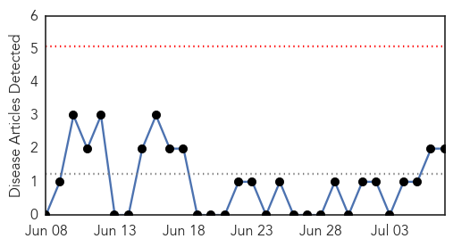
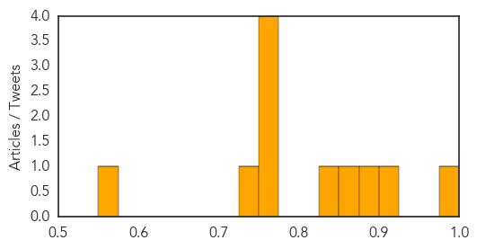

Chikungunya
30-Day Web Trend
0 alerts, 0 warnings

30-Day Twitter Trend
0 alerts, 0 warnings

Article Locations

Article Confidences

Top Articles:
Top Tweets:
-
No tweets found for Jul 07, 2015
Influenza
30-Day Web Trend
0 alerts, 0 warnings

30-Day Twitter Trend
0 alerts, 0 warnings

Article Locations

Article Confidences
Top Articles:
- 0.995
- Flu Scan for Jul 06, 2015
- 0.914
- flu season?
- 0.898
- Ansun BioPharma Publishes Effects of FluDase™ on Drug Resistant Flu
- 0.852
- Record presentations to Hawke’s Bay Emergency Department
- 0.840
- Parliament calls for urgent steps to contain Avian flu
- 0.754
- US poultry industry devastated by bird flu
- 0.751
- July 6, 2015 Archives
- 0.751
- July 6, 2015 Archives
- 0.751
- July 6, 2015 Archives
- 0.735
- flu season?
- 0.573
- Sick doctors admit to spreading infections at work
Top Tweets:
-
No tweets found for Jul 07, 2015